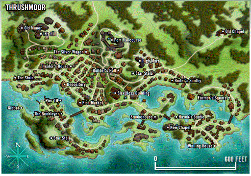

<canvas id="canvas" width=512 height=360></canvas>
<canvas id="canvas2" width=512 height=360></canvas>
<div style="display:none;">
  
</div>
<pre></pre>
<script>

    const canvas = document.getElementById('canvas');
 const height = canvas.height;
 const width  = canvas.width;
    const ctx = canvas.getContext('2d');
    const image = document.getElementById('source');

    const canvas2 = document.getElementById('canvas2');
    const ctx2 = canvas2.getContext('2d');
    image.addEventListener('load', e => {
        ctx.drawImage(image, 0, 0);


        var imageData = ctx.getImageData(0, 0, width, height);
        var imageData2 = new ImageData(width, height);

        var csv = "";
        for (var i = 0, h = imageData.height; i < h; i++)
        {
            let pxl = 0;
            for (var j = 0, w = imageData.width; j < w * 4; j++)
            {
                let index = (i * w * 4) + j;
                switch (index % 4)
                {
                case 0 :
                    pxl = imageData.data[index];
                    /* imageData2.data[index] = imageData.data[index]; */
                    break;
                case 1 :
                    pxl += imageData.data[index];
                    /* imageData2.data[index] = imageData.data[index]; */
                    break;
                case 2 :
                    pxl += imageData.data[index];
                    csv += Math.floor(pxl / 3);
                    imageData2.data[index - 0] = Math.floor(pxl / 3);
                    imageData2.data[index - 1] = Math.floor(pxl / 3);
                    imageData2.data[index - 2] = Math.floor(pxl / 3);
                    csv += ", ";
                    break;
                case 3 :
                    imageData2.data[index] = 255;
                    continue;
                }
            }

            csv += "\n";
        }

        ctx2.putImageData(imageData2, 0, 0);
        document.querySelector("pre").innerHTML = csv;
    });


</script>
